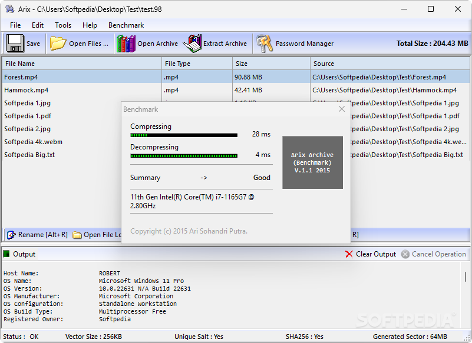

Secure your data with powerful compression and AES-256 encryption.
Zipping files is a common task, whether for organizational or storage reasons. Arix Archive takes a modern approach by focusing on strong encryption during compression, ensuring your data remains safe and inaccessible to unauthorized users.
The application utilizes AES-256 encryption and enforces password protection on every archive. This focus on security makes Arix Archive ideal for anyone looking to safeguard sensitive files during compression.
The user interface is minimalist and intuitive. Simply select the files you wish to archive, choose a secure password, and save the file in the proprietary .98 format. The application handles the rest without the need for configuration.
Although Arix Archive currently only supports its own .98 archive format and lacks compression parameter settings, the robust encryption and simplicity of use make it an excellent choice for users who prioritize data protection over customization.
Utilizes AES-256 encryption with enforced password protection on all archives.
All files are saved using the .98 format to ensure tight integration with encryption mechanisms.
Implements internal strategies to help thwart brute-force attacks on archive files.
